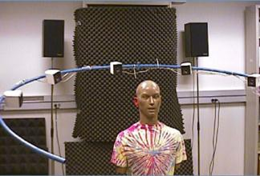

4.5. HRTF-Based Spatial Audio Systems
Spatial audio systems based on Head-Related Transfer Functions are capable of creating convincing three-dimensional acoustic sensations by filtering sound through finite impulse response (FIR) filter pairs representing the left and right ear HRTFs:

Digital Signal Processing Architecture
Given a dry monaural input audio signal $s(t)$, the binaural signals delivered to the left and right ears are synthesized via time-domain convolution with the respective Head-Related Impulse Responses $h_L(t, \theta, \phi)$ and $h_R(t, \theta, \phi)$:
$$x_L(t) = s(t) * h_L(t, \theta, \phi)$$ $$x_R(t) = s(t) * h_R(t, \theta, \phi)$$
The Convolvotron
In the early 1990s, Elizabeth Wenzel and Scott Foster developed the Convolvotron for NASA Ames Research Center. It was one of the earliest real-time hardware convolution engines, capable of calculating real-time HRTF convolutions with dynamic head tracking for virtual reality flight simulation environments.
Headphones vs. Loudspeakers: Crosstalk Cancellation
- Headphones: Naturally deliver the left binaural signal $x_L(t)$ exclusively to the left ear, and $x_R(t)$ exclusively to the right ear.
- Loudspeakers: If binaural audio is reproduced over standard stereo speakers, an acoustic problem known as transaural crosstalk occurs: the sound from the left speaker reaches not only the left ear, but also diffracts around the head to reach the right ear. To reproduce 3D audio over speakers, digital crosstalk cancellation (CTC) filter networks (such as Recursive Transaural Filters or Cooper-Bauck filters) must be applied to cancel cross-bleeding acoustic paths in real time.
Head Tracking and Latency Requirements
When listening over headphones without head tracking, turning your head causes the virtual sound source to rotate with you—an unnatural sensation that frequently leads to inside-the-head localization (lateralization) or front/back confusion. Integrating an electronic head tracker updates HRTF filter coefficients in response to head orientation, anchoring virtual sources firmly to fixed positions in room space. For realistic immersion, the total system latency must remain below 30 to 50 milliseconds.